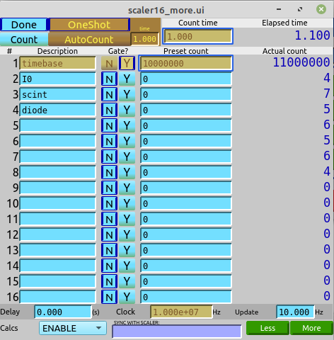

Basic, Part A: Scaler and Count#
From APS Python Training for Bluesky Data Acquisition.
Objective
In this lesson, we’ll work with a scaler (devices that counts pulses emitted from one or more pulse-emitting detector electronics) and use this to make a first lesson in using Bluesky and related tools.
First, we’ll show how to start a Jupyter notebook. Next, we’ll connect with an EPICS scaler (using ophyd), and then use the Bluesky software to count from the scaler.
note: This tutorial expects to find an EPICS IOC on the local network configured as a synApps xxx IOC with prefix gp:.
A docker container is available to provide this IOC. See this URL for instructions: prjemian/epics-docker
Starting this session in a Jupyter notebook#
This session was started from the linux command line:
$ source /APSshare/anaconda3/Bluesky/bin/activate (base) $ jupyter-notebook
This command produced the following console output and then started my default web browser with a one-time-token-authenticated connection to the Jupyter Notebook server (still running in the console):
[I 15:16:57.546 NotebookApp] Serving notebooks from local directory: /home/oxygen18/JEMIAN
[I 15:16:57.546 NotebookApp] 0 active kernels
[I 15:16:57.546 NotebookApp] The Jupyter Notebook is running at:
[I 15:16:57.546 NotebookApp] http://localhost:8888/?token=e6a7584762c731a7c64f8f71246b3e616d779f7b4852c9d9
[I 15:16:57.546 NotebookApp] Use Control-C to stop this server and shut down all kernels (twice to skip confirmation).
[C 15:16:57.547 NotebookApp]
Copy/paste this URL into your browser when you connect for the first time,
to login with a token:
http://localhost:8888/?token=e6a7584762c731a7c64f8f71246b3e616d779f7b4852c9d9
[I 15:17:00.863 NotebookApp] Accepting one-time-token-authenticated connection from ::1
Next, found the New drop-down menu button (top right, below the Logout button) and selected Python 3 to start a new notebook page using a Python 3 shell (the only kind available here).
Finally, from the File menu in the jupyter notebook (in the browser), selected Rename … to save the Untitled notebook with the name basic_scaler (default extension is .ipynb).
Connect an EPICS scaler#
We have a synApps (v6.1) XXX-style IOC with the prefix gp:. It has a scaler, at least 16 soft channel motors, and some other support we’ll ignore in this lesson. Here is a typical display screen for the scaler:

The scaler is gp:scaler1. We’ll connect to that first. To make the connection, we need to import the ScalerCH device from the ophyd.scaler library.
[1]:
from ophyd.scaler import ScalerCH
Now we can create the scaler object we’ll use as a detector.
[2]:
scaler = ScalerCH("gp:scaler1", name="scaler")
In a script or program, we should wait for that to connect with EPICS.
[3]:
scaler.wait_for_connection()
Let’s test that connection by asking the scaler to read its values from EPICS.
[4]:
scaler.read()
[4]:
OrderedDict([('timebase',
{'value': 16000000.0, 'timestamp': 1684257074.233208}),
('I0', {'value': 6.0, 'timestamp': 1684257074.233208}),
('scint', {'value': 7.0, 'timestamp': 1684257074.233208}),
('I000', {'value': 8.0, 'timestamp': 1684257074.233208}),
('I00', {'value': 7.0, 'timestamp': 1684257074.233208}),
('roi1', {'value': 8.0, 'timestamp': 1684257074.233208}),
('', {'value': 0.0, 'timestamp': 1684257074.233208}),
('scaler_time', {'value': 1.6, 'timestamp': 1684257074.233208})])
Our scaler only has a few channels in use (that is, channels where the name of the channel has been specified in the GUI screen). Let’s focus on just those channels.
To read just the named channels (and eliminate that one channel with an empty text name), we call the scaler’s select_channels() method.
[5]:
scaler.select_channels()
scaler.read()
[5]:
OrderedDict([('timebase',
{'value': 16000000.0, 'timestamp': 1684257074.233208}),
('I0', {'value': 6.0, 'timestamp': 1684257074.233208}),
('scint', {'value': 7.0, 'timestamp': 1684257074.233208}),
('I000', {'value': 8.0, 'timestamp': 1684257074.233208}),
('I00', {'value': 7.0, 'timestamp': 1684257074.233208}),
('roi1', {'value': 8.0, 'timestamp': 1684257074.233208}),
('scaler_time', {'value': 1.6, 'timestamp': 1684257074.233208})])
If you want to change the name fields (in EPICS) on any of the scaler channels from the command line, follow this example.
[6]:
scaler.channels.chan07.chname.put("ROI1")
Then, update the scaler object for these channels.
[7]:
scaler.select_channels()
scaler.read()
[7]:
OrderedDict([('timebase',
{'value': 16000000.0, 'timestamp': 1684257074.233208}),
('I0', {'value': 6.0, 'timestamp': 1684257074.233208}),
('scint', {'value': 7.0, 'timestamp': 1684257074.233208}),
('I000', {'value': 8.0, 'timestamp': 1684257074.233208}),
('I00', {'value': 7.0, 'timestamp': 1684257074.233208}),
('ROI1', {'value': 8.0, 'timestamp': 1684257074.233208}),
('scaler_time', {'value': 1.6, 'timestamp': 1684257074.233208})])
Get, then Set the count time on the scaler#
The preset counting time (.TP) is one of the many fields of the EPICS scaler record. It is available as scaler.preset_time in this scaler object. We can inspect this:
[8]:
scaler.preset_time
[8]:
EpicsSignal(read_pv='gp:scaler1.TP', name='scaler_preset_time', parent='scaler', timestamp=1684257074.233208, tolerance=0.001, auto_monitor=False, string=False, write_pv='gp:scaler1.TP', limits=False, put_complete=False)
scaler.preset_time is an `EpicsSignal <bluesky/ophyd>`__. All such Signal objects have a .get() method which returns the Signal’s value.
[9]:
scaler.preset_time.get()
[9]:
1.5
Set the scaler to count for 1.5 seconds once it is told to count. We’ll count it next.
[10]:
scaler.preset_time.put(1.5)
Note, to tell the scaler to count, we put a 1 to its .CNT field.
[11]:
scaler.count.put(1)
Now, read the scaler again. This scaler is not very interesting since it is not connected to any hardware. But, the timestamps have changed.
[12]:
scaler.read()
[12]:
OrderedDict([('timebase', {'value': 0.0, 'timestamp': 1684257074.233208}),
('I0', {'value': 0.0, 'timestamp': 1684257074.233208}),
('scint', {'value': 0.0, 'timestamp': 1684257074.233208}),
('I000', {'value': 0.0, 'timestamp': 1684257074.233208}),
('I00', {'value': 0.0, 'timestamp': 1684257074.233208}),
('ROI1', {'value': 0.0, 'timestamp': 1684257074.233208}),
('scaler_time', {'value': 0.0, 'timestamp': 1684257074.233208})])
Use Bluesky to count the scaler#
So far, we have used ophyd to talk with the EPICS scaler. Let’s start to use Bluesky. We need to load support to start the Bluesky RunEngine. For now, we’ll use the most basic configuration (does not save data anywhere).
The job of the RunEngine is to process command messages (our data acquisition commands) and to output documents (the data to be acquired). Initially, we’ll use predefined data acquisition sequences (called plans) and ignore the documents.
[13]:
from bluesky import RunEngine
RE = RunEngine({})
Next, we’ll load a library with many predefined plans. The first plan we want to use is `count() <https://blueskyproject.io/bluesky/generated/bluesky.plans.count.html#bluesky.plans.count>`__. By the way, we’ll use a python feature to rename bluesky.plans to the shorter bp since it will be used a lot.
[14]:
import bluesky.plans as bp
Now we can count the scaler by submitting the bp.count plan to the RunEngine instance RE. The bp.count() plan takes one argument, a list of countable objects (just in case you want to count more than one detector at the same time). Our list has only one object: scaler
[15]:
RE(bp.count([scaler]))
[15]:
('62b7d6d8-01ee-4984-83bf-b44e90239d90',)
The final result from submitting a plan to the RunEngine is an identifier of the sequence of documents. Since we did not capture that sequence, we can’t view it or access it in any way. Let’s fix that next.
Report about the documents emitted from the RunEngine#
To display information about the documents emitted from the RunEngine, we need to make a function that will receive the documents.
In Bluesky terms, this type of function is a callback. It takes two arguments. The first argument is a str that tells what kind of document is coming, the second is a python dictionary with the document’s contents. We’ll start by printing summary information. We then submit the plan again with the name of our callback function as a second argument (not to bp.count but as a second argument to RE()).
[16]:
def myCallbackBrief(key, doc):
print(key, len(doc))
[17]:
RE(bp.count([scaler]), myCallbackBrief)
start 11
descriptor 8
event 7
stop 6
[17]:
('4774a0b2-929b-4b23-a1b7-64e3fe6e4033',)
So, there were four documents. See https://blueskyproject.io/bluesky/documents.html for the details of each. Let’s extend our callback to print the details of each.
[18]:
def myCallback(key, doc):
print(key, len(doc))
for k, v in doc.items():
print("\t", k, v)
print("~~~~~~~~~~~~~~~~~")
[19]:
RE(bp.count([scaler]), myCallback)
start 11
uid 289316ca-646a-425f-96b3-70a8485982bb
time 1684257089.5682273
versions {'ophyd': '1.7.0', 'bluesky': '1.10.0'}
scan_id 3
plan_type generator
plan_name count
detectors ['scaler']
num_points 1
num_intervals 0
plan_args {'detectors': ["ScalerCH(prefix='gp:scaler1', name='scaler', read_attrs=['channels', 'channels.chan01', 'channels.chan01.s', 'channels.chan02', 'channels.chan02.s', 'channels.chan04', 'channels.chan04.s', 'channels.chan05', 'channels.chan05.s', 'channels.chan06', 'channels.chan06.s', 'channels.chan07', 'channels.chan07.s', 'time'], configuration_attrs=['channels', 'channels.chan01', 'channels.chan01.chname', 'channels.chan01.preset', 'channels.chan01.gate', 'channels.chan02', 'channels.chan02.chname', 'channels.chan02.preset', 'channels.chan02.gate', 'channels.chan04', 'channels.chan04.chname', 'channels.chan04.preset', 'channels.chan04.gate', 'channels.chan05', 'channels.chan05.chname', 'channels.chan05.preset', 'channels.chan05.gate', 'channels.chan06', 'channels.chan06.chname', 'channels.chan06.preset', 'channels.chan06.gate', 'channels.chan07', 'channels.chan07.chname', 'channels.chan07.preset', 'channels.chan07.gate', 'count_mode', 'delay', 'auto_count_delay', 'freq', 'preset_time', 'auto_count_time', 'egu'])"], 'num': 1}
hints {'dimensions': [(('time',), 'primary')]}
~~~~~~~~~~~~~~~~~
descriptor 8
run_start 289316ca-646a-425f-96b3-70a8485982bb
time 1684257091.3677423
data_keys {'timebase': {'source': 'PV:gp:scaler1.S1', 'dtype': 'number', 'shape': [], 'units': '', 'lower_ctrl_limit': 0.0, 'upper_ctrl_limit': 0.0, 'precision': 0, 'object_name': 'scaler'}, 'I0': {'source': 'PV:gp:scaler1.S2', 'dtype': 'number', 'shape': [], 'units': '', 'lower_ctrl_limit': 0.0, 'upper_ctrl_limit': 0.0, 'precision': 0, 'object_name': 'scaler'}, 'scint': {'source': 'PV:gp:scaler1.S4', 'dtype': 'number', 'shape': [], 'units': '', 'lower_ctrl_limit': 0.0, 'upper_ctrl_limit': 0.0, 'precision': 0, 'object_name': 'scaler'}, 'I000': {'source': 'PV:gp:scaler1.S5', 'dtype': 'number', 'shape': [], 'units': '', 'lower_ctrl_limit': 0.0, 'upper_ctrl_limit': 0.0, 'precision': 0, 'object_name': 'scaler'}, 'I00': {'source': 'PV:gp:scaler1.S6', 'dtype': 'number', 'shape': [], 'units': '', 'lower_ctrl_limit': 0.0, 'upper_ctrl_limit': 0.0, 'precision': 0, 'object_name': 'scaler'}, 'ROI1': {'source': 'PV:gp:scaler1.S7', 'dtype': 'number', 'shape': [], 'units': '', 'lower_ctrl_limit': 0.0, 'upper_ctrl_limit': 0.0, 'precision': 0, 'object_name': 'scaler'}, 'scaler_time': {'source': 'PV:gp:scaler1.T', 'dtype': 'number', 'shape': [], 'units': '', 'lower_ctrl_limit': 0.0, 'upper_ctrl_limit': 0.0, 'precision': 3, 'object_name': 'scaler'}}
uid 0b8e90f0-4365-4faf-aeb7-0be05e2af8f0
configuration {'scaler': {'data': {'scaler_channels_chan01_chname': 'timebase', 'scaler_channels_chan01_preset': 15000000.0, 'scaler_channels_chan01_gate': 'Y', 'scaler_channels_chan02_chname': 'I0', 'scaler_channels_chan02_preset': 0.0, 'scaler_channels_chan02_gate': 'N', 'scaler_channels_chan04_chname': 'scint', 'scaler_channels_chan04_preset': 0.0, 'scaler_channels_chan04_gate': 'N', 'scaler_channels_chan05_chname': 'I000', 'scaler_channels_chan05_preset': 0.0, 'scaler_channels_chan05_gate': 'N', 'scaler_channels_chan06_chname': 'I00', 'scaler_channels_chan06_preset': 0.0, 'scaler_channels_chan06_gate': 'N', 'scaler_channels_chan07_chname': 'ROI1', 'scaler_channels_chan07_preset': 0.0, 'scaler_channels_chan07_gate': 'N', 'scaler_count_mode': 'OneShot', 'scaler_delay': 0.0, 'scaler_auto_count_delay': 0.0, 'scaler_freq': 10000000.0, 'scaler_preset_time': 1.5, 'scaler_auto_count_time': 1.0, 'scaler_egu': ''}, 'timestamps': {'scaler_channels_chan01_chname': 1684257091.350259, 'scaler_channels_chan01_preset': 1684257091.350259, 'scaler_channels_chan01_gate': 1684257091.350259, 'scaler_channels_chan02_chname': 1684257091.350259, 'scaler_channels_chan02_preset': 1684257091.350259, 'scaler_channels_chan02_gate': 1684257091.350259, 'scaler_channels_chan04_chname': 1684257091.350259, 'scaler_channels_chan04_preset': 1684257091.350259, 'scaler_channels_chan04_gate': 1684257091.350259, 'scaler_channels_chan05_chname': 1684257091.350259, 'scaler_channels_chan05_preset': 1684257091.350259, 'scaler_channels_chan05_gate': 1684257091.350259, 'scaler_channels_chan06_chname': 1684257091.350259, 'scaler_channels_chan06_preset': 1684257091.350259, 'scaler_channels_chan06_gate': 1684257091.350259, 'scaler_channels_chan07_chname': 1684257091.350259, 'scaler_channels_chan07_preset': 1684257091.350259, 'scaler_channels_chan07_gate': 1684257091.350259, 'scaler_count_mode': 1684257091.350259, 'scaler_delay': 1684257091.350259, 'scaler_auto_count_delay': 1684257091.350259, 'scaler_freq': 1684257091.350259, 'scaler_preset_time': 1684257091.350259, 'scaler_auto_count_time': 1684257091.350259, 'scaler_egu': 1684257091.350259}, 'data_keys': OrderedDict([('scaler_channels_chan01_chname', {'source': 'PV:gp:scaler1.NM1', 'dtype': 'string', 'shape': [], 'units': None, 'lower_ctrl_limit': None, 'upper_ctrl_limit': None}), ('scaler_channels_chan01_preset', {'source': 'PV:gp:scaler1.PR1', 'dtype': 'number', 'shape': [], 'units': '', 'lower_ctrl_limit': 0.0, 'upper_ctrl_limit': 0.0, 'precision': 0}), ('scaler_channels_chan01_gate', {'source': 'PV:gp:scaler1.G1', 'dtype': 'string', 'shape': [], 'units': None, 'lower_ctrl_limit': None, 'upper_ctrl_limit': None, 'enum_strs': ('N', 'Y')}), ('scaler_channels_chan02_chname', {'source': 'PV:gp:scaler1.NM2', 'dtype': 'string', 'shape': [], 'units': None, 'lower_ctrl_limit': None, 'upper_ctrl_limit': None}), ('scaler_channels_chan02_preset', {'source': 'PV:gp:scaler1.PR2', 'dtype': 'number', 'shape': [], 'units': '', 'lower_ctrl_limit': 0.0, 'upper_ctrl_limit': 0.0, 'precision': 0}), ('scaler_channels_chan02_gate', {'source': 'PV:gp:scaler1.G2', 'dtype': 'string', 'shape': [], 'units': None, 'lower_ctrl_limit': None, 'upper_ctrl_limit': None, 'enum_strs': ('N', 'Y')}), ('scaler_channels_chan04_chname', {'source': 'PV:gp:scaler1.NM4', 'dtype': 'string', 'shape': [], 'units': None, 'lower_ctrl_limit': None, 'upper_ctrl_limit': None}), ('scaler_channels_chan04_preset', {'source': 'PV:gp:scaler1.PR4', 'dtype': 'number', 'shape': [], 'units': '', 'lower_ctrl_limit': 0.0, 'upper_ctrl_limit': 0.0, 'precision': 0}), ('scaler_channels_chan04_gate', {'source': 'PV:gp:scaler1.G4', 'dtype': 'string', 'shape': [], 'units': None, 'lower_ctrl_limit': None, 'upper_ctrl_limit': None, 'enum_strs': ('N', 'Y')}), ('scaler_channels_chan05_chname', {'source': 'PV:gp:scaler1.NM5', 'dtype': 'string', 'shape': [], 'units': None, 'lower_ctrl_limit': None, 'upper_ctrl_limit': None}), ('scaler_channels_chan05_preset', {'source': 'PV:gp:scaler1.PR5', 'dtype': 'number', 'shape': [], 'units': '', 'lower_ctrl_limit': 0.0, 'upper_ctrl_limit': 0.0, 'precision': 0}), ('scaler_channels_chan05_gate', {'source': 'PV:gp:scaler1.G5', 'dtype': 'string', 'shape': [], 'units': None, 'lower_ctrl_limit': None, 'upper_ctrl_limit': None, 'enum_strs': ('N', 'Y')}), ('scaler_channels_chan06_chname', {'source': 'PV:gp:scaler1.NM6', 'dtype': 'string', 'shape': [], 'units': None, 'lower_ctrl_limit': None, 'upper_ctrl_limit': None}), ('scaler_channels_chan06_preset', {'source': 'PV:gp:scaler1.PR6', 'dtype': 'number', 'shape': [], 'units': '', 'lower_ctrl_limit': 0.0, 'upper_ctrl_limit': 0.0, 'precision': 0}), ('scaler_channels_chan06_gate', {'source': 'PV:gp:scaler1.G6', 'dtype': 'string', 'shape': [], 'units': None, 'lower_ctrl_limit': None, 'upper_ctrl_limit': None, 'enum_strs': ('N', 'Y')}), ('scaler_channels_chan07_chname', {'source': 'PV:gp:scaler1.NM7', 'dtype': 'string', 'shape': [], 'units': None, 'lower_ctrl_limit': None, 'upper_ctrl_limit': None}), ('scaler_channels_chan07_preset', {'source': 'PV:gp:scaler1.PR7', 'dtype': 'number', 'shape': [], 'units': '', 'lower_ctrl_limit': 0.0, 'upper_ctrl_limit': 0.0, 'precision': 0}), ('scaler_channels_chan07_gate', {'source': 'PV:gp:scaler1.G7', 'dtype': 'string', 'shape': [], 'units': None, 'lower_ctrl_limit': None, 'upper_ctrl_limit': None, 'enum_strs': ('N', 'Y')}), ('scaler_count_mode', {'source': 'PV:gp:scaler1.CONT', 'dtype': 'string', 'shape': [], 'units': None, 'lower_ctrl_limit': None, 'upper_ctrl_limit': None, 'enum_strs': ('OneShot', 'AutoCount')}), ('scaler_delay', {'source': 'PV:gp:scaler1.DLY', 'dtype': 'number', 'shape': [], 'units': '', 'lower_ctrl_limit': 0.0, 'upper_ctrl_limit': 0.0, 'precision': 3}), ('scaler_auto_count_delay', {'source': 'PV:gp:scaler1.DLY1', 'dtype': 'number', 'shape': [], 'units': '', 'lower_ctrl_limit': 0.0, 'upper_ctrl_limit': 0.0, 'precision': 3}), ('scaler_freq', {'source': 'PV:gp:scaler1.FREQ', 'dtype': 'number', 'shape': [], 'units': '', 'lower_ctrl_limit': 0.0, 'upper_ctrl_limit': 0.0, 'precision': 3}), ('scaler_preset_time', {'source': 'PV:gp:scaler1.TP', 'dtype': 'number', 'shape': [], 'units': '', 'lower_ctrl_limit': 0.0, 'upper_ctrl_limit': 0.0, 'precision': 3}), ('scaler_auto_count_time', {'source': 'PV:gp:scaler1.TP1', 'dtype': 'number', 'shape': [], 'units': '', 'lower_ctrl_limit': 0.0, 'upper_ctrl_limit': 0.0, 'precision': 3}), ('scaler_egu', {'source': 'PV:gp:scaler1.EGU', 'dtype': 'string', 'shape': [], 'units': None, 'lower_ctrl_limit': None, 'upper_ctrl_limit': None})])}}
name primary
hints {'scaler': {'fields': ['timebase', 'I0', 'scint', 'I000', 'I00', 'ROI1']}}
object_keys {'scaler': ['timebase', 'I0', 'scint', 'I000', 'I00', 'ROI1', 'scaler_time']}
~~~~~~~~~~~~~~~~~
event 7
descriptor 0b8e90f0-4365-4faf-aeb7-0be05e2af8f0
time 1684257091.4174223
data {'timebase': 16000000.0, 'I0': 6.0, 'scint': 9.0, 'I000': 7.0, 'I00': 8.0, 'ROI1': 9.0, 'scaler_time': 1.6}
timestamps {'timebase': 1684257091.350259, 'I0': 1684257091.350259, 'scint': 1684257091.350259, 'I000': 1684257091.350259, 'I00': 1684257091.350259, 'ROI1': 1684257091.350259, 'scaler_time': 1684257091.350259}
seq_num 1
uid c7726af3-4491-4019-a5df-030ee76a2088
filled {}
~~~~~~~~~~~~~~~~~
stop 6
run_start 289316ca-646a-425f-96b3-70a8485982bb
time 1684257091.4661891
uid b6df412a-4c18-4109-937a-a7f4edf28790
exit_status success
reason
num_events {'primary': 1}
~~~~~~~~~~~~~~~~~
[19]:
('289316ca-646a-425f-96b3-70a8485982bb',)
With the details, we see more of what is happening.
The first document is a start and it says what is happening and how it will be identified. The identifier (named uid) is a UUID (specifically, a uuid4). This looks tedious and random. The one good thing is that these are unique and often can be referred to by the first few characters (6-8 are enough to be probably unique). The uid from the start document is what
the RunEngine reports when the scan stops.
The second document is a descriptor and it says what, exactly, will be measured. It also includes a reference to start’s uid. We can follow the chain back to start this way.
The third document is an event and it provides the data reading when the scaler was counted. The data is read according to the descriptor document (just actual values for the named channels).
The last document is a stop document that describes how things ended. It also says there was only one stream of event documents named primary.
Let’s repeat that plan, this time asking to count the scaler three times. This is the num=3 addition to the call to bp.count(). What’s tricky now is keeping track of the parentheses and square braces.
[20]:
RE(bp.count([scaler], num=3), myCallback)
start 11
uid 6303cb22-caa4-4975-a532-1a1d99a4808d
time 1684257091.5613716
versions {'ophyd': '1.7.0', 'bluesky': '1.10.0'}
scan_id 4
plan_type generator
plan_name count
detectors ['scaler']
num_points 3
num_intervals 2
plan_args {'detectors': ["ScalerCH(prefix='gp:scaler1', name='scaler', read_attrs=['channels', 'channels.chan01', 'channels.chan01.s', 'channels.chan02', 'channels.chan02.s', 'channels.chan04', 'channels.chan04.s', 'channels.chan05', 'channels.chan05.s', 'channels.chan06', 'channels.chan06.s', 'channels.chan07', 'channels.chan07.s', 'time'], configuration_attrs=['channels', 'channels.chan01', 'channels.chan01.chname', 'channels.chan01.preset', 'channels.chan01.gate', 'channels.chan02', 'channels.chan02.chname', 'channels.chan02.preset', 'channels.chan02.gate', 'channels.chan04', 'channels.chan04.chname', 'channels.chan04.preset', 'channels.chan04.gate', 'channels.chan05', 'channels.chan05.chname', 'channels.chan05.preset', 'channels.chan05.gate', 'channels.chan06', 'channels.chan06.chname', 'channels.chan06.preset', 'channels.chan06.gate', 'channels.chan07', 'channels.chan07.chname', 'channels.chan07.preset', 'channels.chan07.gate', 'count_mode', 'delay', 'auto_count_delay', 'freq', 'preset_time', 'auto_count_time', 'egu'])"], 'num': 3}
hints {'dimensions': [(('time',), 'primary')]}
~~~~~~~~~~~~~~~~~
descriptor 8
run_start 6303cb22-caa4-4975-a532-1a1d99a4808d
time 1684257093.345719
data_keys {'timebase': {'source': 'PV:gp:scaler1.S1', 'dtype': 'number', 'shape': [], 'units': '', 'lower_ctrl_limit': 0.0, 'upper_ctrl_limit': 0.0, 'precision': 0, 'object_name': 'scaler'}, 'I0': {'source': 'PV:gp:scaler1.S2', 'dtype': 'number', 'shape': [], 'units': '', 'lower_ctrl_limit': 0.0, 'upper_ctrl_limit': 0.0, 'precision': 0, 'object_name': 'scaler'}, 'scint': {'source': 'PV:gp:scaler1.S4', 'dtype': 'number', 'shape': [], 'units': '', 'lower_ctrl_limit': 0.0, 'upper_ctrl_limit': 0.0, 'precision': 0, 'object_name': 'scaler'}, 'I000': {'source': 'PV:gp:scaler1.S5', 'dtype': 'number', 'shape': [], 'units': '', 'lower_ctrl_limit': 0.0, 'upper_ctrl_limit': 0.0, 'precision': 0, 'object_name': 'scaler'}, 'I00': {'source': 'PV:gp:scaler1.S6', 'dtype': 'number', 'shape': [], 'units': '', 'lower_ctrl_limit': 0.0, 'upper_ctrl_limit': 0.0, 'precision': 0, 'object_name': 'scaler'}, 'ROI1': {'source': 'PV:gp:scaler1.S7', 'dtype': 'number', 'shape': [], 'units': '', 'lower_ctrl_limit': 0.0, 'upper_ctrl_limit': 0.0, 'precision': 0, 'object_name': 'scaler'}, 'scaler_time': {'source': 'PV:gp:scaler1.T', 'dtype': 'number', 'shape': [], 'units': '', 'lower_ctrl_limit': 0.0, 'upper_ctrl_limit': 0.0, 'precision': 3, 'object_name': 'scaler'}}
uid ba57a59a-3215-4f85-94a0-d5ed3914b11f
configuration {'scaler': {'data': {'scaler_channels_chan01_chname': 'timebase', 'scaler_channels_chan01_preset': 15000000.0, 'scaler_channels_chan01_gate': 'Y', 'scaler_channels_chan02_chname': 'I0', 'scaler_channels_chan02_preset': 0.0, 'scaler_channels_chan02_gate': 'N', 'scaler_channels_chan04_chname': 'scint', 'scaler_channels_chan04_preset': 0.0, 'scaler_channels_chan04_gate': 'N', 'scaler_channels_chan05_chname': 'I000', 'scaler_channels_chan05_preset': 0.0, 'scaler_channels_chan05_gate': 'N', 'scaler_channels_chan06_chname': 'I00', 'scaler_channels_chan06_preset': 0.0, 'scaler_channels_chan06_gate': 'N', 'scaler_channels_chan07_chname': 'ROI1', 'scaler_channels_chan07_preset': 0.0, 'scaler_channels_chan07_gate': 'N', 'scaler_count_mode': 'OneShot', 'scaler_delay': 0.0, 'scaler_auto_count_delay': 0.0, 'scaler_freq': 10000000.0, 'scaler_preset_time': 1.5, 'scaler_auto_count_time': 1.0, 'scaler_egu': ''}, 'timestamps': {'scaler_channels_chan01_chname': 1684257093.323402, 'scaler_channels_chan01_preset': 1684257093.323402, 'scaler_channels_chan01_gate': 1684257093.323402, 'scaler_channels_chan02_chname': 1684257093.323402, 'scaler_channels_chan02_preset': 1684257093.323402, 'scaler_channels_chan02_gate': 1684257093.323402, 'scaler_channels_chan04_chname': 1684257093.323402, 'scaler_channels_chan04_preset': 1684257093.323402, 'scaler_channels_chan04_gate': 1684257093.323402, 'scaler_channels_chan05_chname': 1684257093.323402, 'scaler_channels_chan05_preset': 1684257093.323402, 'scaler_channels_chan05_gate': 1684257093.323402, 'scaler_channels_chan06_chname': 1684257093.323402, 'scaler_channels_chan06_preset': 1684257093.323402, 'scaler_channels_chan06_gate': 1684257093.323402, 'scaler_channels_chan07_chname': 1684257093.323402, 'scaler_channels_chan07_preset': 1684257093.323402, 'scaler_channels_chan07_gate': 1684257093.323402, 'scaler_count_mode': 1684257093.323402, 'scaler_delay': 1684257093.323402, 'scaler_auto_count_delay': 1684257093.323402, 'scaler_freq': 1684257093.323402, 'scaler_preset_time': 1684257093.323402, 'scaler_auto_count_time': 1684257093.323402, 'scaler_egu': 1684257093.323402}, 'data_keys': OrderedDict([('scaler_channels_chan01_chname', {'source': 'PV:gp:scaler1.NM1', 'dtype': 'string', 'shape': [], 'units': None, 'lower_ctrl_limit': None, 'upper_ctrl_limit': None}), ('scaler_channels_chan01_preset', {'source': 'PV:gp:scaler1.PR1', 'dtype': 'number', 'shape': [], 'units': '', 'lower_ctrl_limit': 0.0, 'upper_ctrl_limit': 0.0, 'precision': 0}), ('scaler_channels_chan01_gate', {'source': 'PV:gp:scaler1.G1', 'dtype': 'string', 'shape': [], 'units': None, 'lower_ctrl_limit': None, 'upper_ctrl_limit': None, 'enum_strs': ('N', 'Y')}), ('scaler_channels_chan02_chname', {'source': 'PV:gp:scaler1.NM2', 'dtype': 'string', 'shape': [], 'units': None, 'lower_ctrl_limit': None, 'upper_ctrl_limit': None}), ('scaler_channels_chan02_preset', {'source': 'PV:gp:scaler1.PR2', 'dtype': 'number', 'shape': [], 'units': '', 'lower_ctrl_limit': 0.0, 'upper_ctrl_limit': 0.0, 'precision': 0}), ('scaler_channels_chan02_gate', {'source': 'PV:gp:scaler1.G2', 'dtype': 'string', 'shape': [], 'units': None, 'lower_ctrl_limit': None, 'upper_ctrl_limit': None, 'enum_strs': ('N', 'Y')}), ('scaler_channels_chan04_chname', {'source': 'PV:gp:scaler1.NM4', 'dtype': 'string', 'shape': [], 'units': None, 'lower_ctrl_limit': None, 'upper_ctrl_limit': None}), ('scaler_channels_chan04_preset', {'source': 'PV:gp:scaler1.PR4', 'dtype': 'number', 'shape': [], 'units': '', 'lower_ctrl_limit': 0.0, 'upper_ctrl_limit': 0.0, 'precision': 0}), ('scaler_channels_chan04_gate', {'source': 'PV:gp:scaler1.G4', 'dtype': 'string', 'shape': [], 'units': None, 'lower_ctrl_limit': None, 'upper_ctrl_limit': None, 'enum_strs': ('N', 'Y')}), ('scaler_channels_chan05_chname', {'source': 'PV:gp:scaler1.NM5', 'dtype': 'string', 'shape': [], 'units': None, 'lower_ctrl_limit': None, 'upper_ctrl_limit': None}), ('scaler_channels_chan05_preset', {'source': 'PV:gp:scaler1.PR5', 'dtype': 'number', 'shape': [], 'units': '', 'lower_ctrl_limit': 0.0, 'upper_ctrl_limit': 0.0, 'precision': 0}), ('scaler_channels_chan05_gate', {'source': 'PV:gp:scaler1.G5', 'dtype': 'string', 'shape': [], 'units': None, 'lower_ctrl_limit': None, 'upper_ctrl_limit': None, 'enum_strs': ('N', 'Y')}), ('scaler_channels_chan06_chname', {'source': 'PV:gp:scaler1.NM6', 'dtype': 'string', 'shape': [], 'units': None, 'lower_ctrl_limit': None, 'upper_ctrl_limit': None}), ('scaler_channels_chan06_preset', {'source': 'PV:gp:scaler1.PR6', 'dtype': 'number', 'shape': [], 'units': '', 'lower_ctrl_limit': 0.0, 'upper_ctrl_limit': 0.0, 'precision': 0}), ('scaler_channels_chan06_gate', {'source': 'PV:gp:scaler1.G6', 'dtype': 'string', 'shape': [], 'units': None, 'lower_ctrl_limit': None, 'upper_ctrl_limit': None, 'enum_strs': ('N', 'Y')}), ('scaler_channels_chan07_chname', {'source': 'PV:gp:scaler1.NM7', 'dtype': 'string', 'shape': [], 'units': None, 'lower_ctrl_limit': None, 'upper_ctrl_limit': None}), ('scaler_channels_chan07_preset', {'source': 'PV:gp:scaler1.PR7', 'dtype': 'number', 'shape': [], 'units': '', 'lower_ctrl_limit': 0.0, 'upper_ctrl_limit': 0.0, 'precision': 0}), ('scaler_channels_chan07_gate', {'source': 'PV:gp:scaler1.G7', 'dtype': 'string', 'shape': [], 'units': None, 'lower_ctrl_limit': None, 'upper_ctrl_limit': None, 'enum_strs': ('N', 'Y')}), ('scaler_count_mode', {'source': 'PV:gp:scaler1.CONT', 'dtype': 'string', 'shape': [], 'units': None, 'lower_ctrl_limit': None, 'upper_ctrl_limit': None, 'enum_strs': ('OneShot', 'AutoCount')}), ('scaler_delay', {'source': 'PV:gp:scaler1.DLY', 'dtype': 'number', 'shape': [], 'units': '', 'lower_ctrl_limit': 0.0, 'upper_ctrl_limit': 0.0, 'precision': 3}), ('scaler_auto_count_delay', {'source': 'PV:gp:scaler1.DLY1', 'dtype': 'number', 'shape': [], 'units': '', 'lower_ctrl_limit': 0.0, 'upper_ctrl_limit': 0.0, 'precision': 3}), ('scaler_freq', {'source': 'PV:gp:scaler1.FREQ', 'dtype': 'number', 'shape': [], 'units': '', 'lower_ctrl_limit': 0.0, 'upper_ctrl_limit': 0.0, 'precision': 3}), ('scaler_preset_time', {'source': 'PV:gp:scaler1.TP', 'dtype': 'number', 'shape': [], 'units': '', 'lower_ctrl_limit': 0.0, 'upper_ctrl_limit': 0.0, 'precision': 3}), ('scaler_auto_count_time', {'source': 'PV:gp:scaler1.TP1', 'dtype': 'number', 'shape': [], 'units': '', 'lower_ctrl_limit': 0.0, 'upper_ctrl_limit': 0.0, 'precision': 3}), ('scaler_egu', {'source': 'PV:gp:scaler1.EGU', 'dtype': 'string', 'shape': [], 'units': None, 'lower_ctrl_limit': None, 'upper_ctrl_limit': None})])}}
name primary
hints {'scaler': {'fields': ['timebase', 'I0', 'scint', 'I000', 'I00', 'ROI1']}}
object_keys {'scaler': ['timebase', 'I0', 'scint', 'I000', 'I00', 'ROI1', 'scaler_time']}
~~~~~~~~~~~~~~~~~
event 7
descriptor ba57a59a-3215-4f85-94a0-d5ed3914b11f
time 1684257093.4148276
data {'timebase': 16000000.0, 'I0': 7.0, 'scint': 8.0, 'I000': 8.0, 'I00': 5.0, 'ROI1': 8.0, 'scaler_time': 1.6}
timestamps {'timebase': 1684257093.323402, 'I0': 1684257093.323402, 'scint': 1684257093.323402, 'I000': 1684257093.323402, 'I00': 1684257093.323402, 'ROI1': 1684257093.323402, 'scaler_time': 1684257093.323402}
seq_num 1
uid e85912a7-0f2f-460a-8394-9a50aa13dc46
filled {}
~~~~~~~~~~~~~~~~~
event 7
descriptor ba57a59a-3215-4f85-94a0-d5ed3914b11f
time 1684257095.1680999
data {'timebase': 16000000.0, 'I0': 8.0, 'scint': 7.0, 'I000': 7.0, 'I00': 5.0, 'ROI1': 9.0, 'scaler_time': 1.6}
timestamps {'timebase': 1684257095.164514, 'I0': 1684257095.164514, 'scint': 1684257095.164514, 'I000': 1684257095.164514, 'I00': 1684257095.164514, 'ROI1': 1684257095.164514, 'scaler_time': 1684257095.164514}
seq_num 2
uid dceacbcd-7a26-4f26-a5b5-0c707a731878
filled {}
~~~~~~~~~~~~~~~~~
event 7
descriptor ba57a59a-3215-4f85-94a0-d5ed3914b11f
time 1684257096.9594595
data {'timebase': 16000000.0, 'I0': 8.0, 'scint': 5.0, 'I000': 7.0, 'I00': 9.0, 'ROI1': 5.0, 'scaler_time': 1.6}
timestamps {'timebase': 1684257096.955052, 'I0': 1684257096.955052, 'scint': 1684257096.955052, 'I000': 1684257096.955052, 'I00': 1684257096.955052, 'ROI1': 1684257096.955052, 'scaler_time': 1684257096.955052}
seq_num 3
uid ac952c7a-1ae5-4930-adc6-a31bd1466f22
filled {}
~~~~~~~~~~~~~~~~~
stop 6
run_start 6303cb22-caa4-4975-a532-1a1d99a4808d
time 1684257097.0455909
uid ce03caab-6562-46b6-942f-73f629bfd337
exit_status success
reason
num_events {'primary': 3}
~~~~~~~~~~~~~~~~~
[20]:
('6303cb22-caa4-4975-a532-1a1d99a4808d',)
Mostly the same but now there are three event documents.
Summary#
We’ll show this code as a python program:
#!/usr/bin/env python
"""Basic : scaler and count"""
from ophyd.scaler import ScalerCH
from bluesky import RunEngine
import bluesky.plans as bp
def myCallback(key, doc):
print(key, len(doc))
for k, v in doc.items():
print("\t", k, v)
print("~~~~~~~~~~~~~~~~~")
RE = RunEngine({})
scaler = ScalerCH("gp:scaler1", name="scaler")
scaler.preset_time.put(1.5)
print(scaler.preset_time.get())
scaler.channels.chan04.chname.put("scint")
scaler.channels.chan07.chname.put("roi1")
scaler.match_names()
scaler.select_channels()
print(scaler.read())
print(RE(bp.count([scaler], num=3), myCallback))
Quit the jupyter notebook#
Save the “lesson1” page if you wish.
Press the Logout button in the upper right corner of “lesson1” and close the page.
Press the Logout button in the upper right corner of “Home” and close the page.
Type Control-C (^C) twice in the jupyter-notebook console to kill the server.